EDA Analysis Beer and Breweries across the United States
Introduction
In this EDA(Exploratory Data Analysis) we will conduct an analysis of beers sold across the United States. In addition, we will show deep analysis across different beer names, styles, and companies to shed more light into some of the weakness and advantages of certain business strategies.
This analysis will be presented to the Budweiser corporation. We will analyze and investigate data sets and summarize their main characteristics, often employing data visualization methods to be more compressive. Our main goal will be to recognize the areas where the company can focus aiming to strengthen its position in the market and ultimately translate these benefits to the final customer.

Image 1: Logo Budweiser
Loading the libraries we will use for carrying out the EDA
library(tidyverse)
library(stringr)
library(caret)
library(plotly)
library(ggthemes)
library(GGally)
library(class)
library(e1071)
library(maps)
library(usmap)Retrieving data from CSV files
It is very important to update the working directory once you download the project!
##Setting the working directory
#setwd("C:/Users/cestevez/Dropbox/Cloud PC/Thinkpad/Thinkpad Desktop/Master Data Science SMU/Class_Sessions/Data Science Sessions/Repository/SMU_DS_6306_EDA_1")
#Reading the Beers dataset
df_beers = read.csv("Beers.csv",header = TRUE)
#Reading the brewery dataset
df_breweries_1 = read.csv("Breweries.csv",header = TRUE)
df_states = read.csv("States.csv",header=TRUE)
df_breweries_1$State = str_trim(df_breweries_1$State)
df_breweries_2 = merge(df_breweries_1,df_states,by = "State")Data Cleansing and Setting global variables
Addressing the missing values in each column
In this section, we will perform data cleansing. Data Cleaning is one of the important steps in EDA. Data cleaning can be done in many ways. One of them is handling missing values We will implement different methods for IBU and ABV - ABV: Replace missing values with the arithmetic mean - IBU: Replace missing values using KnnImputation method
#Cleaning ABV using mean
df_beers_cl0 = df_beers
nr_mean_abv = mean(df_beers_cl0[!is.na(df_beers_cl0$ABV),]$ABV) #Calculate the mean
length_abv = length(df_beers_cl0[is.na(df_beers_cl0$ABV),]$ABV)
if(length_abv > 0){
df_beers_cl0[is.na(df_beers_cl0$ABV),]$ABV = nr_mean_abv #Replacing Missing value with mean
}
#Cleaning IBU using mean
df_beers_cl1 = df_beers
nr_mean_ibu = mean(df_beers_cl1[!is.na(df_beers_cl1$IBU),]$IBU)
length_ibu = length(df_beers_cl1[is.na(df_beers_cl1$IBU),]$IBU)
if(length_ibu > 0){
df_beers_cl1[is.na(df_beers_cl1$IBU),]$IBU = nr_mean_ibu
}
#Cleaning using KnnInpute
##Creating the model K = 20
knn_imp_model <- preProcess(df_beers_cl0 %>%
select(ABV,IBU),
method = c("knnImpute"),
k = 20,
knnSummary = mean)
#Running the model
df_beers_unp <- predict(knn_imp_model, df_beers_cl0,na.action = na.pass)
#The beer data set will be normalized. To de-normalize and get the original data back:
procNames <- data.frame(col = names(knn_imp_model$mean), mean = knn_imp_model$mean, sd = knn_imp_model$std)
for(i in procNames$col){
df_beers_unp[i] <- df_beers_unp[i]*knn_imp_model$std[i]+knn_imp_model$mean[i]
}
#Plotting IBU before data cleansing
nr_rows = dim(df_beers)[1]
df_beers %>% ggplot(aes(x=IBU))+geom_histogram(fill="black",binwidth = 3)+
labs(title="IBU before performing data cleansing",x="IBU(International bitterness Unit)",y="Observation number")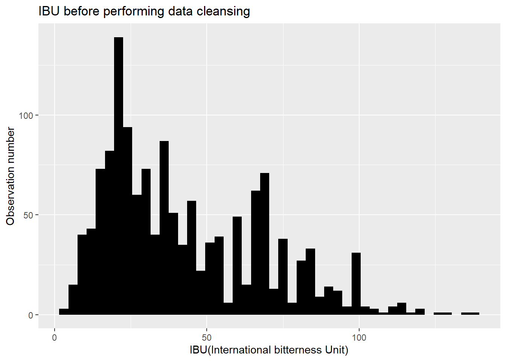
#Plotting ABV before data cleansing
df_beers %>% ggplot(aes(x=ABV))+geom_histogram(fill="black")+
labs(title="ABV before performing data cleansing",x="ABV(Alcohol by Volume)",y="Observation number")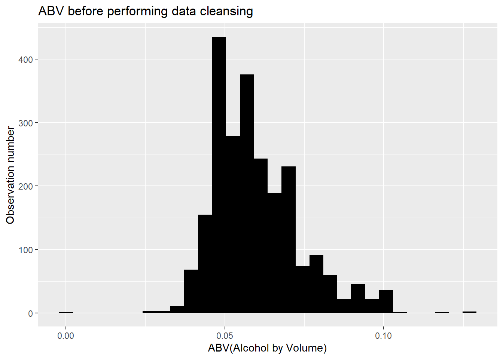
#Plotting IBU using Mean
df_beers_cl1 %>% ggplot(aes(x=IBU))+geom_histogram(fill="blue")+
labs(title="IBU after performing data cleansing",subtitle = "Calculation using Mean",x="IBU(International bitterness Unit)",y="Observation number")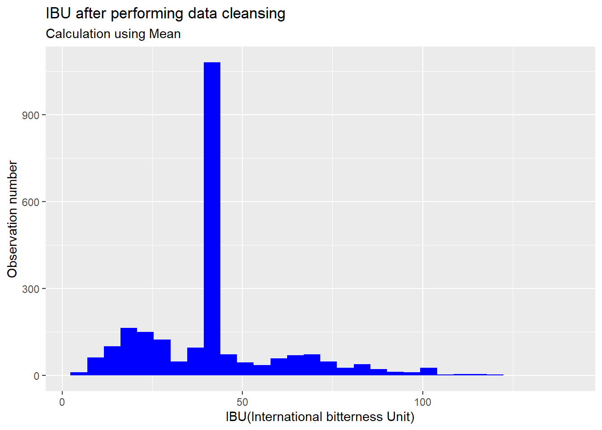
#Plotting IBU KNNImputation and ABV after data cleansing
df_beers_unp %>% ggplot(aes(x=IBU))+geom_histogram(fill="blue",col="black",binwidth = 3)+labs(title="IBU after performing data cleansing",subtitle = "Calculation using KnnImputation",x="IBU(International bitterness Unit)",y="Observation number")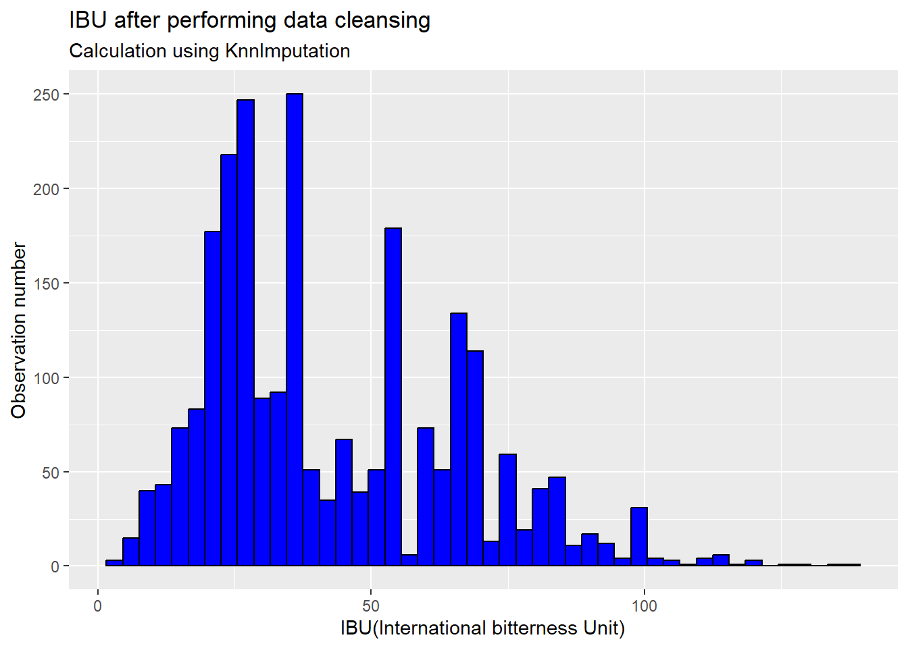
#Plotting ABV after data cleansing
df_beers_unp %>% ggplot(aes(x=ABV))+geom_histogram(fill="blue",col="black")+labs(title="ABV after performing data cleansing",x="ABV(Alcohol by Volume)",y="Observation number")+geom_density(lwd = 1.2,
linetype = 2,
colour = 2)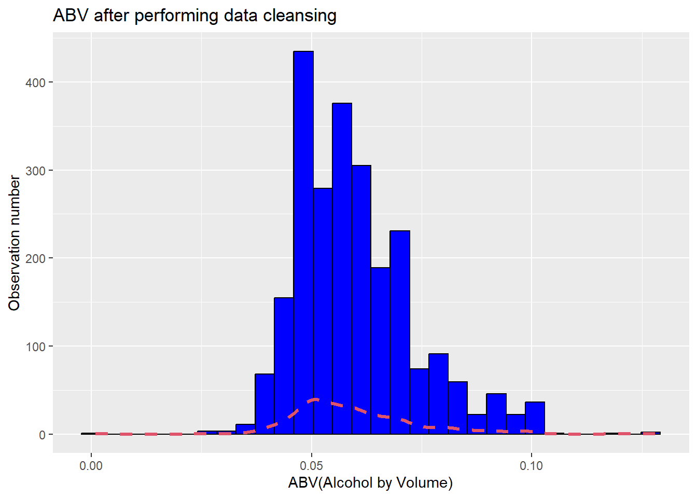
#Merging Beers and Breweries datasets
df_beerbre_unp = merge(df_beers_unp,df_breweries_2,by.x = "Brewery_id",by.y = "Brew_ID")
df_beerbre_unp_1 = filter(df_beerbre_unp,str_detect(df_beerbre_unp$Style,regex("IPA|ALE",ignore_case = TRUE)))
df_beerbre_unp_1 = mutate(df_beerbre_unp_1,Type= ifelse(str_detect(Style,regex("IPA",ignore_case = TRUE)),"IPA","ALE"))
df_beerbre_unp_2 = mutate(df_beerbre_unp,Type = ifelse(str_detect(Style,regex("IPA",ignore_case = TRUE)),"IPA",ifelse(str_detect(Style,regex("ALE",ignore_case = TRUE)),"ALE","OTHERS")))
#Dataframe Map by State
df_usa_states_0 = usmapdata::centroid_labels("states")
#Dataframe Map by State
df_usa_states_1 = map_data("state")
###Number of beer by state(Top 5)
df_berbrew_bystate_0 = group_by(df_beerbre_unp,Brewery_id,Name.y,State) %>% summarize(count_beer = n()) %>% arrange(desc(count_beer)) %>% head(n=5)
df_berbrew_bystate_1 = merge(df_berbrew_bystate_0,df_usa_states_0,by.x = "State",by.y = "abbr")
###Median IBU and ABV by State
df_avg_ibuabv_bystate = df_beerbre_unp %>% group_by(State,Name_State) %>% summarize(Median_ABV = mean(ABV),Median_IBU = mean(IBU))
#The Higest IBU and ABV by State
df_habv_bystate_0 = arrange(df_beerbre_unp,desc(ABV)) %>% head(n = 1)
df_habv_bystate_1 = arrange(df_beerbre_unp,desc(ABV)) %>% head(n = 5)
df_hibu_bystate_0 = arrange(df_beerbre_unp,desc(IBU)) %>% head(n = 5)
df_habv_bystate_1 = merge(df_habv_bystate_1,df_usa_states_0,by.x = "State",by.y = "abbr")
df_hibu_bystate_0 = merge(df_hibu_bystate_0,df_usa_states_0,by.x = "State",by.y = "abbr")
df_beerbre_fil0 = filter(df_beerbre_unp,str_detect(df_beerbre_unp$Style,regex("IPA|ALE",ignore_case = TRUE)))
#We create the column Type for classifying IPA Beer Styles and the Rest
df_beerbre_fil1 = mutate(df_beerbre_fil0,Type= ifelse(str_detect(Style,regex("IPA",ignore_case = TRUE)),"IPA","ALE"))
df_beerbre_fil2 = mutate(df_beerbre_unp,Type = ifelse(str_detect(Style,regex("IPA",ignore_case = TRUE)),"IPA",ifelse(str_detect(Style,regex("ALE",ignore_case = TRUE)),"ALE","OTHERS")))
#We accomulate the number of beers by style but only the most popular(Beer styles with more than five beers)
df_pobeers_bystate = group_by(df_beerbre_unp,State,Name_State,Style) %>% summarize(count_style = n()) %>% filter(count_style>5) %>% mutate(Name_State_2=str_trim(str_to_lower(Name_State)))
df_pobeers_bystate_1 = group_by(df_beerbre_unp,State,Name_State) %>% summarize(count_style = n()) %>% mutate(Name_State_2=str_trim(str_to_lower(Name_State)))
Conclusion
After replacing the missing values of both variables(ABV and IBU) the resulting data distribution looks very similar to the initial distribution. The most challenging was the IBU activity because of the large number of observations(1005). In the end, the Knn process was very effective and the results look very good in the plot.
Analysis of the number of breweries by state
df_brewerybystate=table(df_breweries_2$State)
df_brewerybystate= data.frame(df_brewerybystate)
colnames(df_brewerybystate)[1]="state"
df_brewerybystate$Freq=as.double(df_brewerybystate$Freq)
df_brewerybystate$state=as.character(df_brewerybystate$state)
df_brewerybystate$state=str_replace_all(df_brewerybystate$state," ","")
#Plotting the map
plot_usmap(data = df_brewerybystate, regions = "state", values = "Freq", color = "#56B4E9",labels = TRUE,label_color = "#E69F00") +
scale_fill_continuous(
low = "white", high = "red", name = "Number of Brewery", label = scales::comma
) + theme(legend.position = "right")+labs(title = "Number of Breweries by State")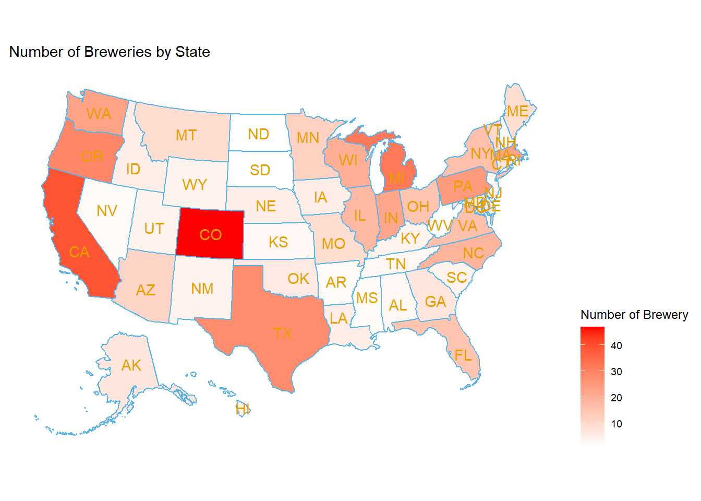
knitr::kable(
df_brewerybystate,
caption = "Number of Breweries by State"
)| state | Freq |
|---|---|
| AK | 7 |
| AL | 3 |
| AR | 2 |
| AZ | 11 |
| CA | 39 |
| CO | 47 |
| CT | 8 |
| DC | 1 |
| DE | 2 |
| FL | 15 |
| GA | 7 |
| HI | 4 |
| IA | 5 |
| ID | 5 |
| IL | 18 |
| IN | 22 |
| KS | 3 |
| KY | 4 |
| LA | 5 |
| MA | 23 |
| MD | 7 |
| ME | 9 |
| MI | 32 |
| MN | 12 |
| MO | 9 |
| MS | 2 |
| MT | 9 |
| NC | 19 |
| ND | 1 |
| NE | 5 |
| NH | 3 |
| NJ | 3 |
| NM | 4 |
| NV | 2 |
| NY | 16 |
| OH | 15 |
| OK | 6 |
| OR | 29 |
| PA | 25 |
| RI | 5 |
| SC | 4 |
| SD | 1 |
| TN | 3 |
| TX | 28 |
| UT | 4 |
| VA | 16 |
| VT | 10 |
| WA | 23 |
| WI | 20 |
| WV | 1 |
| WY | 4 |
Conclusion
This analysis is very meaningful because Budweiser can design marketing and advertising strategies in the states with a larger number of breweries like California and Colorado.
Analysis of the top Breweries(The Big 5)
dfl_berbrew_bystate_1=data.frame(df_berbrew_bystate_1$Name.y,df_berbrew_bystate_1$State,df_berbrew_bystate_1$x,df_berbrew_bystate_1$y,df_berbrew_bystate_1$count_beer)
colnames(dfl_berbrew_bystate_1)=c("company","state","lon","lat","n")
plot_usmap(data = dfl_berbrew_bystate_1, regions = "state", values = "n", fill="indianred",color = "lemonchiffon",labels = TRUE,label_color = "#E69F00") + ggrepel::geom_label_repel(data = dfl_berbrew_bystate_1,aes(x = lon, y = lat, label =company),
size = 3, alpha = 0.8,
label.r = unit(0.5, "lines"), label.size = 0.5,
segment.color = "black", segment.size = 1)+geom_point(data = dfl_berbrew_bystate_1,
aes(x = lon, y = lat, size = n),
color = "navyblue", alpha = 0.5)+scale_size_continuous(range = c(5, 10),name = "Number of American IPA", label = scales::comma)+theme(legend.position = "right")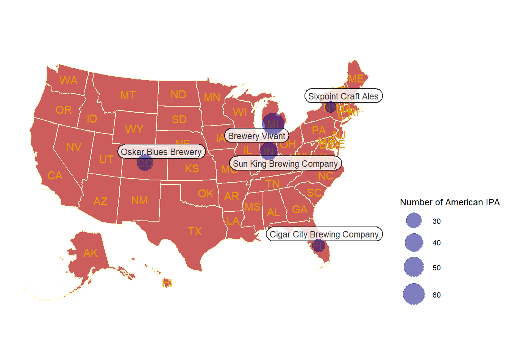
Conclusion
This analysis is also very meaningful. They can improve customer service in the breweries with the highest Customer Demand. In that sense, They might increase the sales demand by offering better services in these areas.
Analysis of the median ABV and IBU by state
ggplot(df_avg_ibuabv_bystate, aes(x = State, y = Median_ABV, fill = Median_IBU)) +
geom_col() +
ggtitle("Median ABV and IBU by State") +
xlab("State") +
ylab("Median ABV") +
scale_fill_gradient(low = "blue", high = "red", name="Median IBU") +
theme(axis.text.x = element_text(angle = 90, vjust = 0.5, hjust=1))
Conclusion
This analysis can be very strategic too. Budweiser can allocate beer types according to different Consumer tastes and preferences. For example, the people in Kansas prefer drinks with a low level of alcohol, Budweiser can negotiate better conditions with the breweries in Kansas in order to have more stock of drinks with a lower level of ABV aiming to meet the customer demand
Analysis of the states with the highest ABV and IBU beers
dfl_top_abv = data.frame(state = df_habv_bystate_1$State,ABV = df_habv_bystate_1$ABV,lat=df_habv_bystate_1$y,lon=df_habv_bystate_1$x,City=df_habv_bystate_1$City)
dfl_top_ibu = data.frame(state = df_hibu_bystate_0$State,IBU = df_hibu_bystate_0$IBU,lat=df_hibu_bystate_0$y,lon=df_hibu_bystate_0$x,City=df_hibu_bystate_0$City)
#plot top 5 state that has the most ABV beer
plot_usmap(data = dfl_top_abv, regions = "state", values = "ABV", color = "#56B4E9",labels = TRUE,label_color = "#E69F00") +
scale_fill_continuous(
low = "white", high = "red", name = "Maximum Alcoholic (ABV)", label = scales::comma
) + theme(legend.position = "left")+ggrepel::geom_label_repel(data = dfl_top_abv,
aes(x = lon, y = lat, label = City),size = 3, alpha = 0.8,
label.r = unit(0.5, "lines"), label.size = 0.5,
segment.color = "black", segment.size = 1)+labs(title = "Analysis of the states with highest ABV")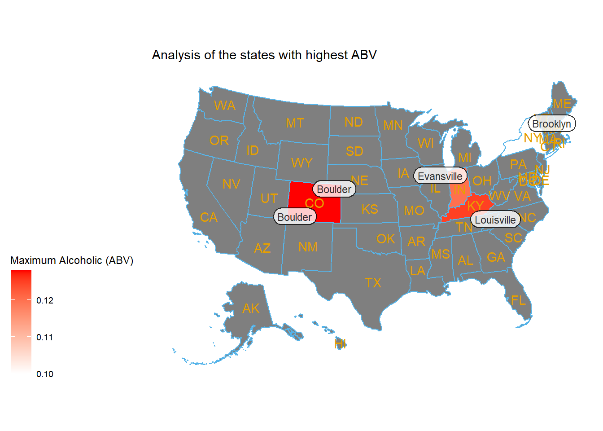
#plot top 5 state that has the most IBU beer
plot_usmap(data = dfl_top_ibu, regions = "state", values = "IBU", color = "#56B4E9",labels = TRUE,label_color = "#E69F00") +
scale_fill_continuous(
low = "white", high = "purple", name = "Maximum Alcoholic (IBU)", label = scales::comma
) + theme(legend.position = "left")+ggrepel::geom_label_repel(data = dfl_top_ibu,
aes(x = lon, y = lat, label = City),size = 3, alpha = 0.8,
label.r = unit(0.5, "lines"), label.size = 0.5,
segment.color = "black", segment.size = 1)+labs(title = "Analysis of the states with highest IBU")
Conclusion
This analysis can reinforce the previous analysis. Again, Budweiser can allocate beer types according to the different Consumer tastes and preferences aiming to atract more clients and increase the sales revenue. We can see from the map that Colorado is a state with a high level of ABV preference. Budweiser can lunch more IPA beers(Higher level of ABV and IBU) in this state and increment sales..
Analysis of the ABV variable and data distribution
df_beerbre_unp_2 %>%select(IBU,ABV,Type)%>%
ggpairs(aes(color=Type))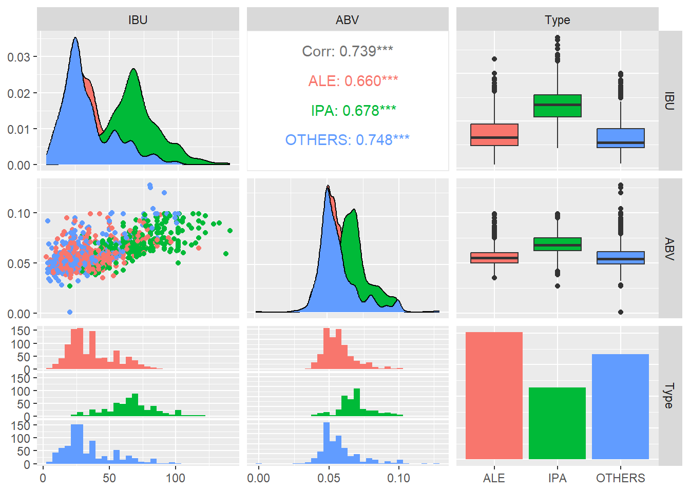
df_beers_unp %>% ggplot(aes(x=ABV))+geom_histogram(fill="blue",col="black")+labs(title="ABV Histogram",x="ABV(Alcohol by Volume)",y="Observation number")+geom_density(lwd = 1.2,
linetype = 2,
colour = 2)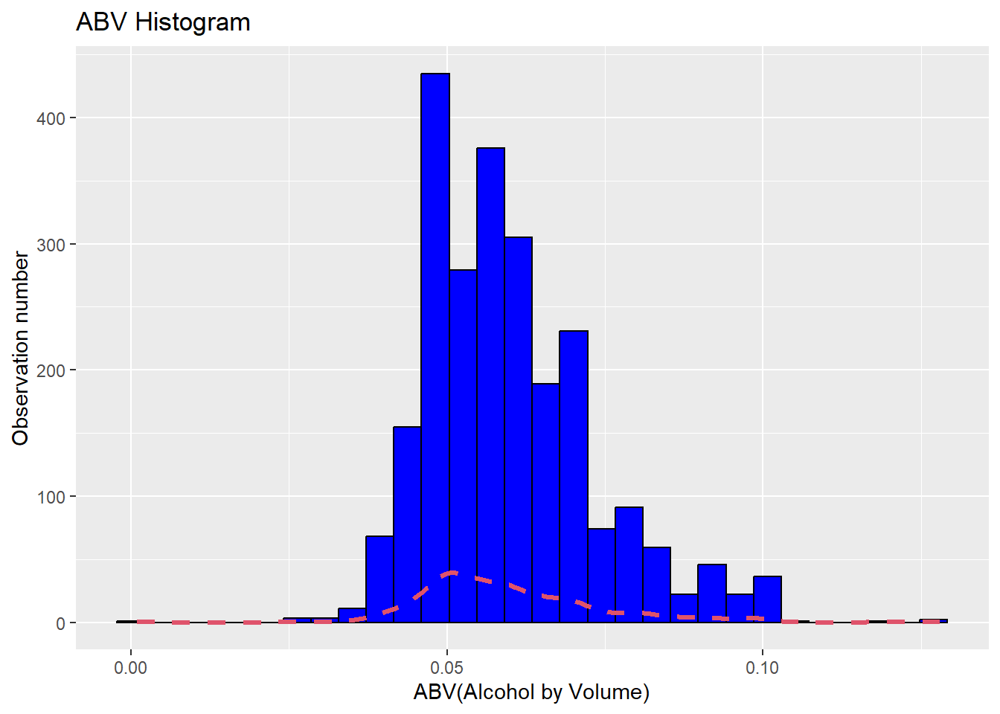
df_beerbre_unp %>% ggplot(aes(x=ABV,fill=State))+geom_histogram()+labs(title="ABV Histogram",x="ABV(Alcohol by Volume)",y="Observation number")+geom_density(lwd = 1.2,
colour = 2)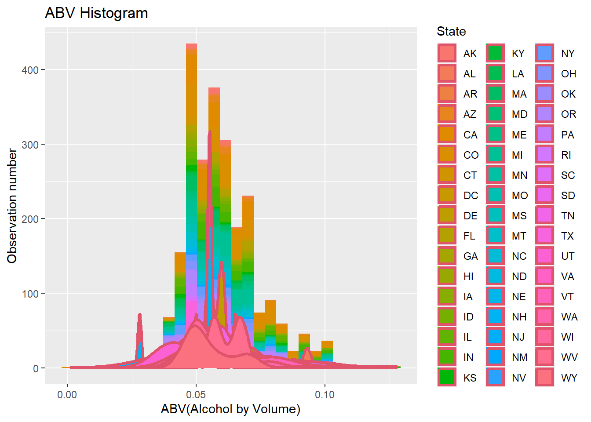
skewness(df_beerbre_unp$ABV)## [1] 0.9698248kurtosis(df_beerbre_unp$ABV)## [1] 1.245737
Conclusion
ABV has a moderately right skewed distribution for following reasons
- The Mean is slightly greater than the Median
- Skewness is BT 0.5 and 1
- A normal distribution has a kurtosis of 3 and ABV kurtosis is less than 3
Analysis of the relationship between ABV and IBU
df_beerbre_unp %>% select(IBU,ABV) %>% ggpairs(columnLabels = c("ABV","IBU"))+
labs(title="Relationship between the bitterness of the beer(IBU) and its alcoholic content(ABV)")
Conclusion
Relationship between IBU and ABV
- Strong positive linear relationship between IBU and ABV
- The correlation coefficient(Close to 1) also confirms the linear relationship
Analysis of IPA and ALE beers in terms of IBU and ABV
When it comes down to it, a Pale Ale should have a nice hop character but medium build, whereas IPAs tend to have higher ABV and IBU.
#We plot the relationship between IBU and ABV by Beer Type
df_beerbre_unp_1 %>% ggplot(aes(x=ABV,y=IBU,color=Type))+geom_point()+
labs(title = "Relationship IBU and AVB",subtitle = "Relationship IBU/AVB by Beer Type")+xlab("Alcohol by Volume (ABV)")+ylab("International Bitterness Unit(IBU)")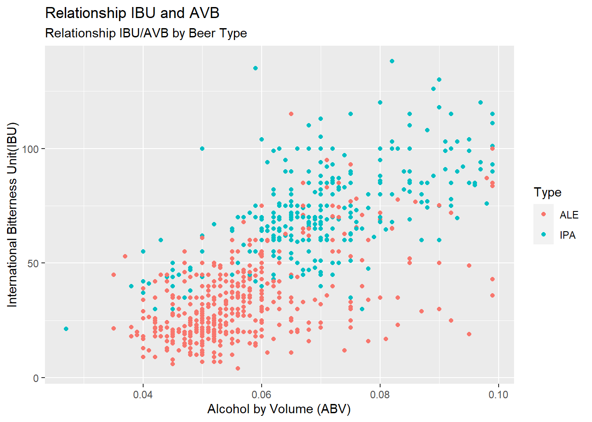
#Initializing the model
nr_percentage = 0.7
nr_observations = nrow(df_beerbre_fil1)
nr_k = 5
#Creating the training and Testing dataset
lst_index_beer = sample(nr_observations,round(nr_observations * nr_percentage))
df_train = df_beerbre_fil1[lst_index_beer,]
df_test = df_beerbre_fil1[-lst_index_beer,]
#Running the model
knn_result = knn(df_train[,c(4,5)],df_test[,c(4,5)],df_train$Type,prob = TRUE,k=nr_k)
co_table = table(knn_result,df_test$Type)
confusionMatrix(co_table)## Confusion Matrix and Statistics
##
##
## knn_result ALE IPA
## ALE 259 39
## IPA 39 136
##
## Accuracy : 0.8351
## 95% CI : (0.7985, 0.8674)
## No Information Rate : 0.63
## P-Value [Acc > NIR] : <2e-16
##
## Kappa : 0.6463
##
## Mcnemar's Test P-Value : 1
##
## Sensitivity : 0.8691
## Specificity : 0.7771
## Pos Pred Value : 0.8691
## Neg Pred Value : 0.7771
## Prevalence : 0.6300
## Detection Rate : 0.5476
## Detection Prevalence : 0.6300
## Balanced Accuracy : 0.8231
##
## 'Positive' Class : ALE
##
Conclusion
As we can see from the image the observations of the IPA beer types have higher levels of bitterness and alcohol. The opposite is also true. The ALE Beer Types have fewer levels of IBU and ABV. The KNN accuracy also is very high. That means there’s a clear difference between IPA beers and the rest
Analysis of the most popular states in terms of beer types and the most popular beer stype across the United States
#Plotting the Popular Beer Style by State x= Style, Y = Count of beer , color = Name of the State
gfr = df_pobeers_bystate %>% arrange(Name_State) %>% ggplot(aes(x=Style,y=count_style,fill = Name_State ))+geom_bar(stat = "identity",position = "stack")+
theme(axis.text.x = element_text(angle = 90, vjust = 0.5, hjust=1),legend.position = "left",text = element_text(size = 10))+labs(title = "Most popular beer style in USA by State",subtitle = "Style with a very few beers are not shown in this analysis")+xlab("USA State")+ylab("Number of Beers by Style")
ggplotly(gfr)#We calculate the mean of every state in order to locate the Label in the center
df_usa_states_3 = df_usa_states_1 %>% group_by(region) %>% summarize(lat=mean(lat),long=mean(long)) %>% mutate(AB_State = str_to_upper(str_sub(region,1,2)))
#Merge of the beer data and the coordinates and locations
df_state_beer_1 = merge(df_pobeers_bystate,df_usa_states_1,by.x = "Name_State_2",by.y = "region")
df_state_beer_2 = merge(df_usa_states_1,df_pobeers_bystate_1,by.x="region",by.y = "Name_State_2")
df_state_beer_3 = merge(df_usa_states_3,df_pobeers_bystate_1,by.x="region",by.y = "Name_State_2")
#Plotting the MAP and The label of each state
map = df_usa_states_1 %>% ggplot()+geom_polygon(aes(x=long, y=lat, group = group,fill=region))+
theme(legend.position = "none")+ggrepel::geom_label_repel(aes(x=long, y=lat,label=sprintf("%s,Beers:%i",Name_State,count_style),alpha=0.8),size=2,data=df_state_beer_3)+
labs(title = "Number of Beer Types by States in USA",subtitle = "Assorment of Beer Types by State in the USA")+xlab("Latitude")+ylab("Longitude")
map
Conclusion
The map shows the information about the number of beers or SKU by state in the United States For example we can notice that state such as California has a large number of beers by style 183 and states like Dakota has only 3 beers by style This data will play an important role in two different areas:
- Advertising strategy
- Inventory management
It is a great idea to invest capital in advertising strategy in states like California and Colorado because of the level of consumption of beer. We don’t have selling information however, we can notice by the wide assortment of California that the demand of beer is really high and more importantly the customers are willing to purchase more style of beers. On the other side, it doesn’t make sense to invest too much money in States like Dakota because it seems that demand of beers is very low. In terms of Inventory Management, it is recommendable to keep a high service level and a good safety stock in states like California or Colorado aiming to provide a great customer service. We have to prevent getting stock out in those states since it seems they bring the most profit to the company.